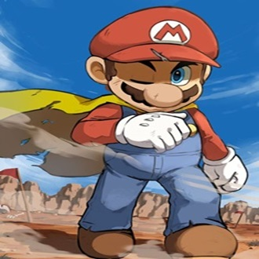
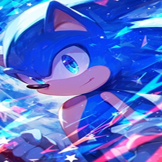
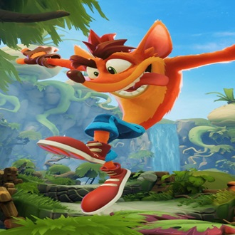
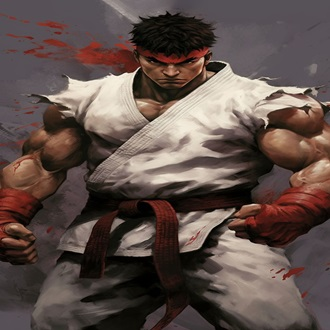

-
Mario (encanador)
Descrição
Mario é o icônico personagem principal da Nintendo. Ele é um encanador italiano que vive no Reino dos Cogumelos e é conhecido por suas aventuras para resgatar a Princesa Peach do vilão Bowser. Mario é reconhecível por seu bigode, boné vermelho com um "M" estampado, macacão azul e camiseta vermelha. Ele é um personagem versátil, estrelando em uma variedade de gêneros de jogos. Ele pode saltar e esmagar inimigos,bem como usar power-ups como o Super Cogumelo, Flor de Fogo e Tanuki, por exemplo.
-
Sonic, O ouriço
Descrição
Sonic é um ouriço azul conhecido por sua incrível velocidade, que usa para combater o vilão Dr. Eggman e salvar o mundo de suas maquinações. Sonic é frequentemente acompanhado por seus amigos, como Tails, Knuckles e Amy Rose. Ele é conhecido por sua atitude confiante e destemida, além de seu desejo incessante por liberdade e aventura e além disso possui uma forma poderosa que o deixo todo dourado quando usa as esmeraldas do caos.
-
Pac-Man

Descrição
Pac-Man é um dos personagens mais icônicos dos videogames, e lançado em 1980. No jogo original, Pac-Man é uma figura amarela em forma de pizza com uma fatia faltando, que percorre um labirinto comendo pontos e frutas enquanto tenta evitar fantasmas inimigos: Blinky, Pinky, Inky e Clyde. O objetivo do jogo é comer todos os pontos no labirinto enquanto se esquiva dos fantasmas, que se tornam vulneráveis quando Pac-Man consome itens especiais chamados "Power Pellets".
-
Crash Bandicoot
Descrição
Crash é um bandicoot antropomórfico, um tipo de marsupial, que vive em uma ilha fictícia no arquipélago das Ilhas Wumpa, ao sul da Austrália. Ele é conhecido por seu comportamento animado e suas aventuras para derrotar o malvado Dr. Neo Cortex, o cientista que o criou.
-
Ryu
Descrição
Ryu é um guerreiro nômade, dedicado a melhorar constantemente suas habilidades e alcançar a perfeição nas artes marciais. Seu estilo de luta inclui técnicas famosas como o "Hadouken" (uma bola de energia lançada pelas mãos), o "Shoryuken" (um uppercut poderoso) e o "Tatsumaki Senpukyaku" (um chute giratório). Ele fez sua estreia no primeiro "Street Fighter" em 1987 e desde então se tornou um dos ícones mais reconhecidos da franquia e dos jogos de luta em geral. Ryu é um artista marcial japonês, conhecido por seu uniforme de karatê branco, faixa vermelha na cabeça e luvas vermelhas.